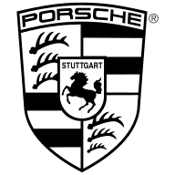

info@vancore.io

In order to ensure optimal user experience please view our website in portrait mode.
info@vancore.io
Focus
Focus
Combining strategic thinking and organizational expertise. Together we implement change that lasts.
Mindset
Mindset
Interactive workshop formats and involvement of executives and experts.
Structure
Structure
Early-on alignment and deliberate communication. Tough analyses and critical questioning.
Combining strategic thinking and organizational expertise. Together we implement change that lasts.
Interactive workshop formats and involvement of executives and experts.
Early-on alignment and deliberate communication. Tough analyses and critical questioning.
Peter Schwarzenbauer
as Executive Vice President Sales & Marketing
Audi AG

Jürgen Bock
as Director Corporate Development & Culture
Otto GmbH & Co. KG
"Vancore didn't force a one-size-fits-all approach like the large strategy consulting firms. They used an easy to follow, highly effective process that stimulated our creativity and guided us towards agreement on the required strategic adjustments."
Luka Mucic, Chief Financial Officer, SAP SE
"In a short time, you got a very good understanding of our business culture and activities. And with a keen sense of topic at hand and the people involved, you carved out the decisive fields of action."
Karl-Heinz Johnen, Managing Director Sales, Marketing and HR, Zentis GmbH & Co. KG
"A primary outcome of the Vancore approach and process: my inner management circle became a strong team, speaking with one voice."
Klaus Berning, as Executive Vice President Sales & Marketing, Porsche AG
Reinhard Vanhöfen, CEO
Founder and enabler
Transformer and empath
Cultivator and moderator
Attitude: It is never too late to plant a tree!
Martin Moog, CEO
Two worlds – business and music
Two methods – structure and improvisation
Two instruments – strategy and saxophone
One goal: Make it work
Kevin Bruns
Startups. Project management. Digital tools.
Jump first. Build the parachute then – in free fall.
Problem solving like bouldering: one small success after the other.
Do something that requires courage every day.
Michael Esser
Scripting, storytelling, staging
Asks what is at stake.
Then asks if it is really so.
Knows methods to ensure that you are understood the way you want to be understood …
Mark Fourman
Mathematician, practice leader, change manager
Large multi-national companies, cross-functional, cross-cultural
Based in USA, Asia, South America
Motto: Organizational development must directly support strategic objectives
Christian Friedrich
Someone has a problem. Someone has a solution.
Someone has a target. Someone helps to reach it.
Someone has a project. Someone helps to implement it.
Knows as a former handball pro: the player is responsible
for the ball until the other person has caught it.
Dr. Wolfgang Grimme
Family, farm, animals.
Consulting, strategy, realization.
Before: soldier, dissertation, politician.
Understands the structures behind the structures. Knows how to get ideas on the road.
Hugo Gstrein & Jakob Rheinlaender
Together: GWW – studio for brand excitement
You can´t fake enthusiasm. But if you dare to search for it,
you may well find it.
The journey is often arduous and always worth it.
For only if you are inspired, you inspire others.
Identity / Big Ideas / Creative Productions
Dirk H Horn
MD Vancore North America
Leadership, organizational development, team dynamics
Music, aviation, automotive, pharmacy
360 degree coach, transformation expert, culture converter
Marc Röllich
Project Management Officer, word acrobat, mountain enthusiast
Original thinker with a bias towards sustainability
Proficient in the tricks of PR;
unwraps complex questions to its core
Erwin Teichmann
Communication consultant, freelance journalist, press officer
Executive communications, change communications, employer communications
Motto: Communication - Reputation - Sustainability
Hilde Maartje Thiele
System, reality, yoga
Office management, project management, project planning
At home in the world, tranquil center, to ride a horse is to ride the sky
Sonja Wegner
Historian, wordsmith, swimmer
Been around the block, takes great interest in how people work together – corporate
culture – and how you can change things – change management
Agreeing with Erich Kästner: There is nothing good unless you do it.
Daniel B. Werner
Digital Business Expert, Leadership Developer, Executive Business Coach
Lifestyle: Digital Native – there is a solution for everything
Outdoor – there is always a road
Surfing – there is always a next wave
Axiom: Success is a triad of clear communication, clear thinking, clear actions.
Andrea Castronovo
Vice President Sales Strategy, Planning, Steering and Future Retail
BMW Group

Heiko Gloge
Managing Director
IGEL Technology

Yes or no. Answers are often simple. The process to get there is not. Too many factors must be
considered in a complex world - not to mention the individual needs of the various stakeholders.
We ask the right questions. We join forces with you and develop a big picture that can be
implemented in small steps. Only decisions made from deep within your organisation have the
potential to become true change.
Focus – Strategies and Business Models
Dialogues, Moderation, Strategy Audits, Development and Steering of Strategies, New Business
Models, Innovation Processes
Mindset – People and Change
Corporate Culture and Brand, Coaching, Change Management and Communication, Leadership, HR
Development, Training Concepts
Structure – Organisation and Cooperation
Program / Project Management, Agile Works Methods, Organizational Development, Bridge to
digitalization, Performance Management
What is BASICS?
BASICS is a multi-stage analytical process that stands for
Baseline | Assumptions | Strategy | Implications | Commitment | Sustainability.
Use the BASICS tool to realistically assess your strategic fitness in about 15 minutes.
You will recognize basic steps of the strategic decision-making process and be able to act
more effectively in the future.
Why making better decisions help you?
Wayne Griffiths
Executive Vice-President for Sales and Marketing
SEAT S.A.
Sven Schuwirth
Head of brand development and digitalisation
Audi AG
Kalbacher Hauptstrasse 37
60437 Frankfurt am Main, Deutschland
Tel. +49 69 50929979-0
Fax. +49 69 50929979-9
Bogenstrasse 45d
20144 Hamburg, Deutschland
Tel. +49 40 60940985-0
Fax. +49 40 60940985-9